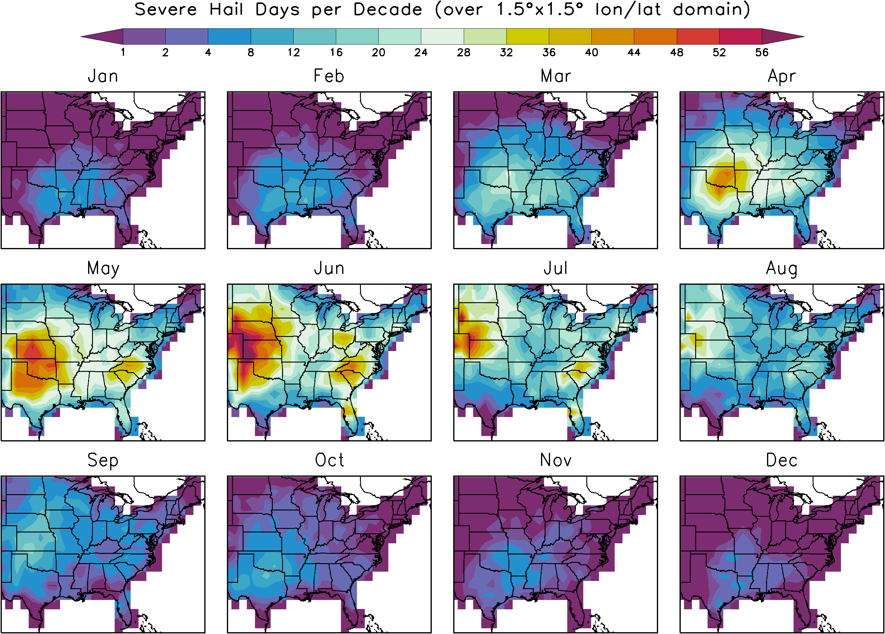
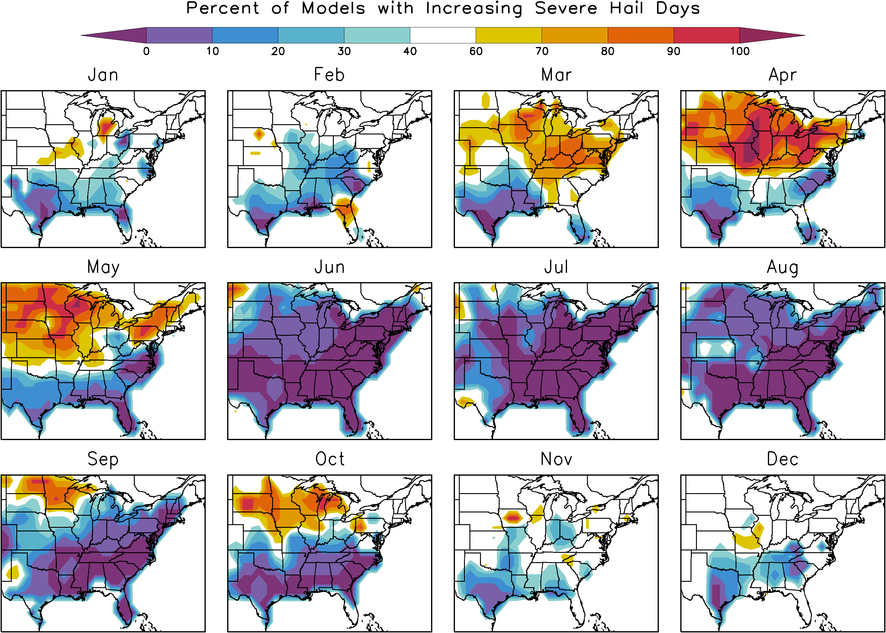

Statistically Downscaled Hail Projections
Mean Hail Probability
To help gauge the magnitude of the severe hail changes we first show the mean (1990-2012) probability of severe hail (within each 1.5ºx1.5º longitude/latitude grid box) as a function of month.
Change
The change in the number of hail days is repeated below. This is the change averaged over all 13 models that are available. The future climate scenario is the A1B and we compare the years 2081-2100 to 1961-2000. During summer, the probability of hail decreases in most regions. In March through May (and to a lesser extent September and October) there are increases in the north and decreases in the south. Comparing the changes to the climatology above, we see that some of these changes are quite substantial (over 50% decrease in some regions in June and July). This plot and the ones below have been smoothed in space to focus on the features that are likely more reliable.

Model Agreement
To judge the consistency of the models (is the model-mean response representative or do the models vary widely) we show the percent of the models that show an increase in severe hail days. A value of 100% means that all models agree that hail will increase. A value of 0% also means that all the models agree that hail will decrease. As seen below the models are fairly consistent and therefore the model mean shown above is fairly representative. In particular, there is very likely going to be a decrease in severe hail in the southern and eastern United States during summer. The rising of the freezing level as the climate warms is the reason for this decrease.
